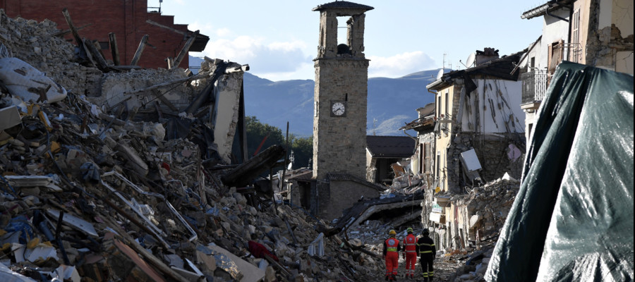

Masonry’s resistance and resilience to earthquakes

KEYNOTE LECTURE
SESSION 1: ARCHAEOSEISMICITY & DIAGNOSIS
Dr. Georgia POURSOULIS (Independant Researcher): Dr in History and Archaeology, specialised in Archaesoseismology : the research of seismic traces on the historical buildings. PhD on the Destruction of the Minoan Palaces in Crete (Greece), obtained in 1999 at Paris I Panthéon-Sorbonne. DPEA construction parasismique of Ecole Nationale Supérieure d’Architecture de Marseille Luminy in 2009. President of the APS Group (Archaeology- Pathologies-Seismicity), work on the 1708 earthquake traces in Manosque and the surroundings from 2001 to 2006. Co-Editor with Agnès Levret-Albaret in 2016 of the 1708 Manosque earthquake: contribution of a historical and archaeological study to the evaluation of the seismic risk in Middle Durance. Member of the AFPS (Association Française du Génie Parasismique), expert in archaeoseismology on the Post-Seismic Mission in l’Aquilla Italy, after the 2009 earthquake.
Dr. Cédric GIRY (McF, Ecole Normale Supérieure Paris-Saclay): Cédric Giry is associate professor at the Ecole normale supérieure Paris-Saclay, in the Civil Engineering Departement. He develops his research activities at LMT (Laboratoire de Mécanique et Technologie) on the analysis of civil engineering structures subjected to static and severe loadings (earthquake). He develops also dedicated tools for the modeling of cracking in reinforced concrete structures and old masonry. He is in charge at LMT of the Thematical Research Unit “Dynamic and behavior of civil engineering structures”. Since the research works developed during the PhD of Claire Limoge, one of its research activities focuses on the evaluation of the seismic vulnerability of old masonry structures and more particularly cultural heritage structures. He has been involved in several national research project funded by the ANR: SINAPS@, THEDESCO, ILISBAR.
He teaches at ENS Paris-Saclay on several topics link to its research interests: vibrations and waves, structural mechanics, earthquake engineering, numerical methods, thermodynamical framework for the material behavior, material behavior and finite element methods.
He works also with the different members of the French earthquake engineering community as the president of the Youth group of the French association of earthquake engineering (AFPS). He leads a new working group at AFPS related to the development of a georeferenced database of the post-earthquake missions of AFPS and has been member of the AFPS mission for the study of the Teil earthquake as civil engineering expert.
Dr. Arnaud MONTABERT (Postdoctoral researcher, Ecole Normale Supérieure Paris-Saclay): PhD (2016 - 2021) in quantitative historical seismicity prepared at Laboratoire de Géologie de l’Ecole Normale Supérieure (Université Paris Sciences et Lettres) cosupervised by BERSSIN (Bureau d’évaluation des risques sismiques pour la sûreté des installations), LMAPS (Laboratoire de modélisation et d’analyse de la performance des structures) from IRSN (Institut de Radioprotection et de Sûreté Nucléaire) and AOROC (Archéologie & Philologie d’Orient et d’Occident).
He got a highly interdisciplinary training : in geosciences, geotechnics and civil engineering (engineering degree from Ecole Nationale Supérieure de Géologie), in observation and modeling of geophysical processes (Ecole Normale Supérieure & Institut de Physique du Globe de Paris) and archaeological sciences (Ecole Normale Supérieure).
Fascinated by past seismic events, he joined the «Earthquake geology and archaeoseismology » group of the Cologne University (Germany) in 2015 to study the seismic response of ancient walls by using discrete element models. In 2016, he joined the french RECAP ANR program as an associated researcher to improve its knowledge in building archaeology. Its work is focused on the study of the impact of the 62-63 A.D. earthquakes that occurred in Pompei by using stratigraphic analysis of archaeological ruins and repairs. He moved to IRSN (Institut de Radioprotection et de Sûreté Nucléaire) in 2017 working at the border between engineering seismology and earthquake engineering with the BEGC (Bureau d’Expertise de Génie Civil) and the BERSSIN teams to improve its skills in structural dynamic modeling and ground motion characterization. Its work is focused on the study of the relationship between ground motion selected from a worldwide ground motion data center and the seismic response of nuclear facilities.
In its Ph.D. thesis, he studies the Sant’Agata del Mugello church, a medieval parish church located in the Mugello area (Tuscany) struck by several historical earthquakes. The study aimed to infer their key ground motion characteristics involving: stratigraphic analysis of the church combined with historical data, the identification of modal parameters using ambient vibration testing, the vibration-based modal updating through an optimization process, the use of a continuum damage model to study the non-linear behavior of this unreinforced masonry building, and the description of ground motion by computing Intensity Measures.
SESSION 2: TECHNOLOGIES & MEASUREMENTS
Dr. Carlo BLASI
SESSION 3: MODELLING MASONRY & RULES
Pr. Gianmarco DE FELICE :
Gianmarco de Felice is Professor of Structural Engineering at the Department of Engineering of Roma Tre University. Graduated in 1990 at the University La Sapienza in Rome, he got his PhD in 1994 from the University of Florence. Research fellow at the Ecole Nationale des Ponts et Chaussées, Paris in 1994-95, researcher at the Faculty of Architecture of Roma Tre University in 1996-2001, associate professor at the Faculty of Engineering and then full professor since 2011.
He teaches the following courses at the Department of Engineering of Roma Tre University: Design of Steel and Reinforced Concrete Structures, Earthquake Engineering, Rehabilitation of Structures.
He is chairman of the RILEM Technical Committee TC-250 CSM “Composites for Sustainable strengthening of Masonry”; chair of the ACI Liaison Committee ACI 5490L, member of the Management Committee of the COST Action TUD 1207 “Next Generation Design Guidelines for Composites in Construction”;member of the Drafting Committee of the “Charter of Rome on the Resilience of Art Cities to Natural Catastrophes”, approved by IAP – The Global Network of Science Academies; associate editor of the Frontiers Structural Materials Journal and of the Journal Advances in Civil Engineering.
He has been the scientific coordinator for the design of engineering projects on heritage conservation and structural rehabilitation, such as: the restoration of Abbey of San Clemente in Casauria supported by the World Monuments Fund and awarded by the Domus International Prize for Restoration and Conservation, the seismic retrofitting of San Bernardino Convent after L’Aquila 2009 earthquake, the restoration of the Farnese Palace in Ischia di Castro, attributed to Antonio da Sangallo.
His current research activity encompasses the structural performance of architectural heritage, the seismic assessment and retrofitting of masonry and reinforced concrete structures, the modelling of soil-structure interaction due to excavation, the development of strengthening systems with composites, the mechanical characterization of composites. On these topics he has the responsibility of different research projects and has been invited to give general or keynote lectures to the several Conferences, among which 8th SAHC 2012, 15th MASE 2013; MuRiCo4 2014; Lincei Academy 2015; 10th SAHC 2016.